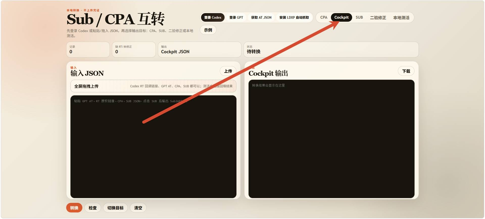
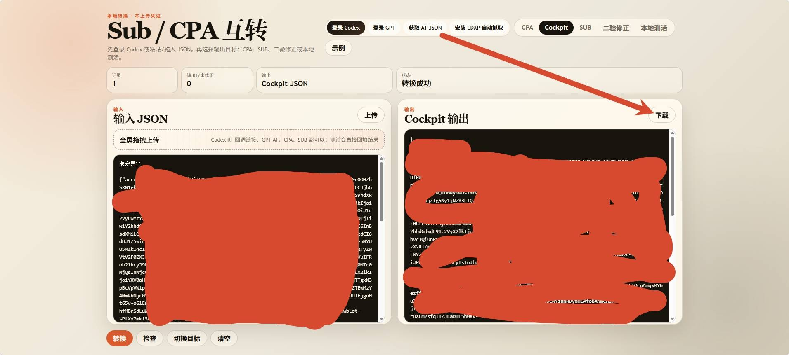
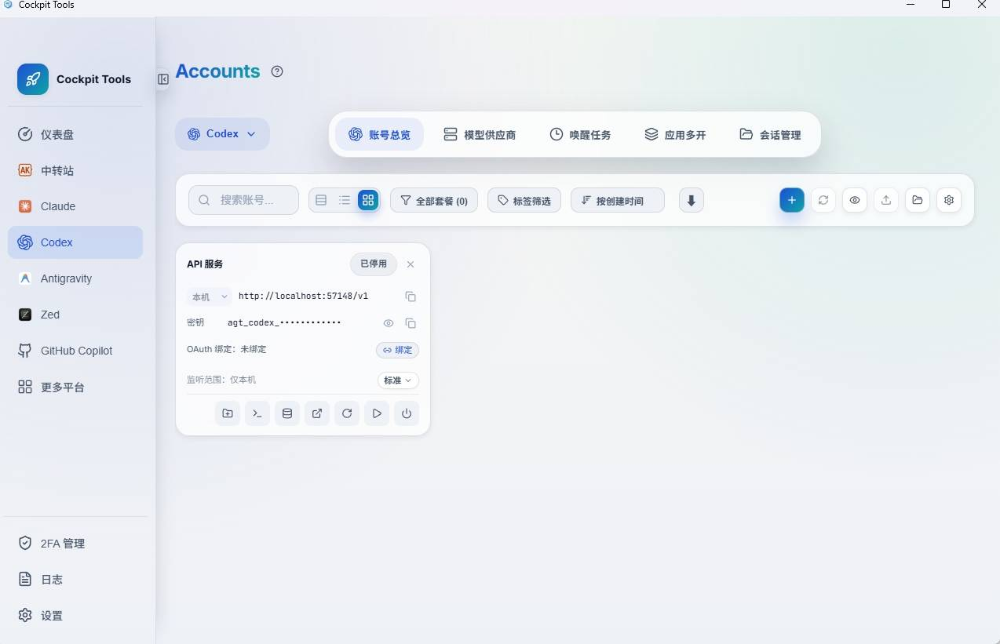
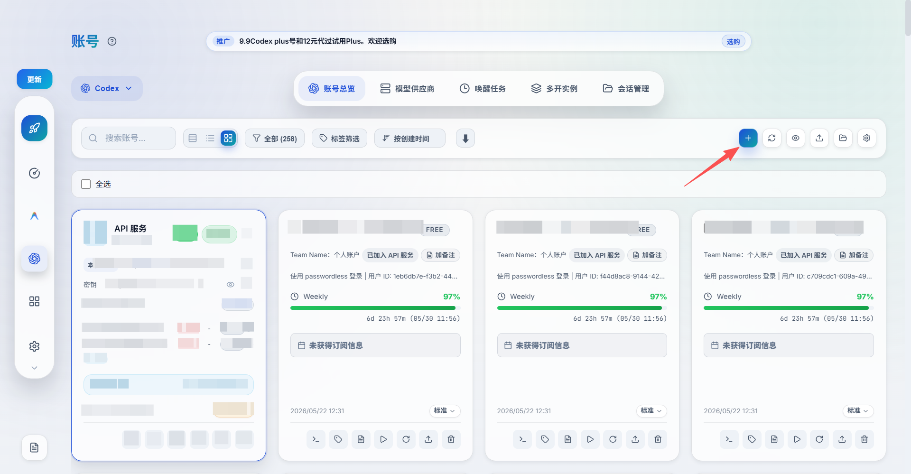
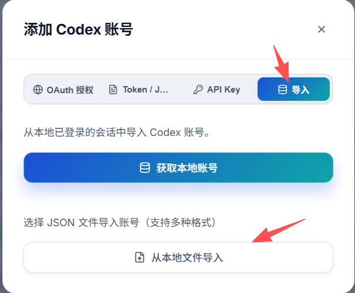
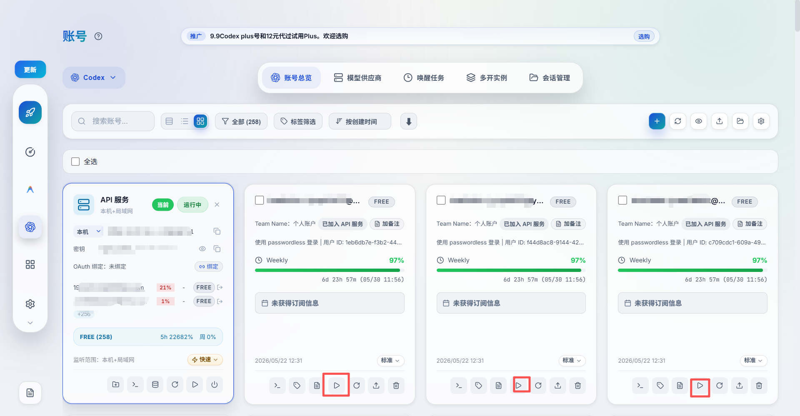
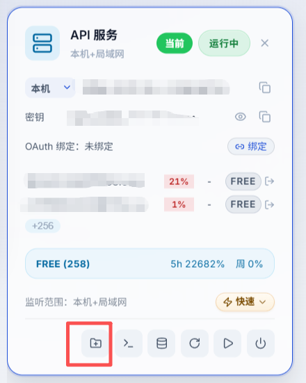
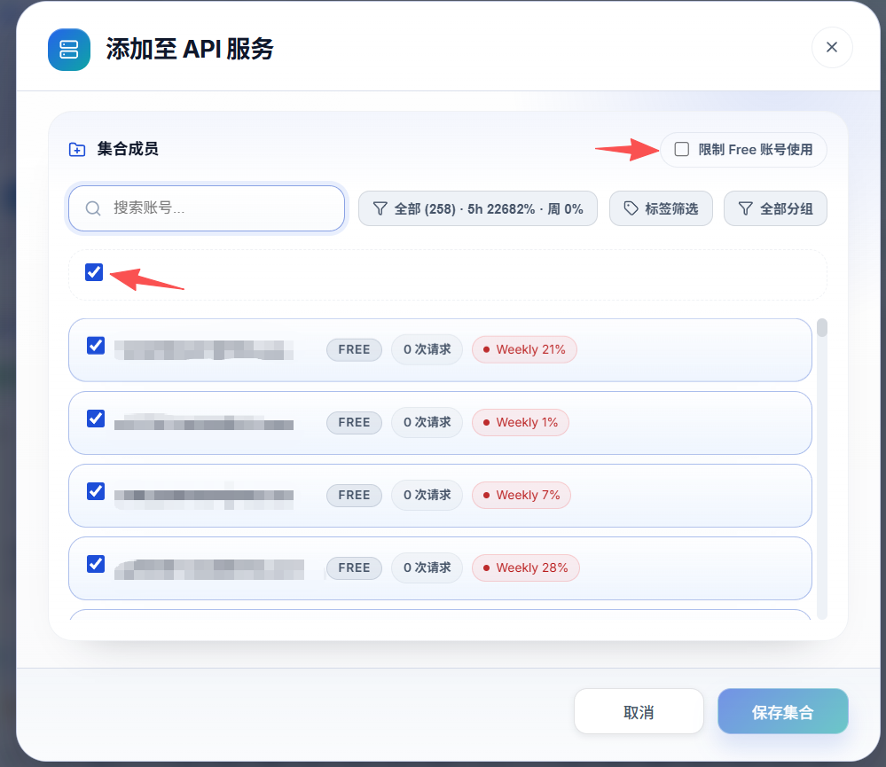
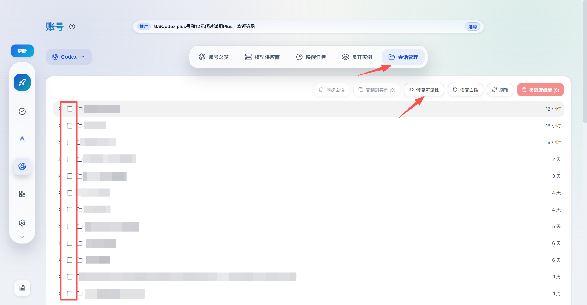

反代教程， 目前好多朋友想账密登录，我只能说你账密登录还得接码，麻烦，咱目前卡密网站激活兑换后，给你json格式的一个文件，json直接导入反代软件就能用，反代后使用codex，且导入比登录更加方便，故下面教大家如何反代
1. 转换 JSON 格式
开始教学之前我先说一下，每个软件的json格式都不一样，我卡网激活网站给大家下载的是cpa和sub2的格式，所以大家在使用cockpit的时候，先去这个网站 https://tinyurl.com/236l87uw ，点击cockpit，点击选择文件【也是可以批量选择的】把你下载json文件批量导入进去，然后在上方选择你要转换成咱自己的反代软件格式即可【我这里教的是cockpit，我就选择cockpit】，转换后点击下载json即可，下载后，回到cockpit，把你的json文件批量导入进去即可


2. 下载 Cockpit
下面是cockpit的下载和使用教程：先去https://github.com/jlcodes99/cockpit-tools/releases这个网站下载反代软件，最好下新版，因为会实时更新很多功能，不知道下载什么别来问我，因为我也不知道，自己去网上搜
下载完成后是这样的

3. 批量导入 Codex 账号
然后找到左侧第四个按钮，为codex，点开后，点击蓝色＋号，点击导入，然后把你下载的json文件导入即可，是可以批量导入的


4. 设置启动路径并启动
导入进去后就是这样的，想启动哪个账号就去点击启动按钮【启动前先去设置，找到codex的启动路径，选择一下，不知道在哪就点击默认自动选择】

【如果你启动单个账号提示要登陆codex，那就是cockpit常见bug，把账号加入到api启动api服务即可解决，下面就是api服务教程】
5. 配置 API 服务
然后下面再给大家介绍一下api服务是什么，假如我们有100个账号的话，如果说我们不弄api服务，其中一个账号额度消耗完，我们只能关闭codex，回到cockpit重新切换另一个账号，十分的麻烦且影响效率，这时候api服务的作用就显现出来了，它可以把这100个账号的所有额度合到一块，这样其中一个账号额度消耗完毕自动切另一个号。下面教大家怎么使用api服务，如以下图1，点击图1红框为添加账号，到了图2，不要限制free账号的使用，然后点击全选，点击保存，然后回到图1，点击启动api就可以了。


6. 选择运行模式
api服务上有一个标准和快速的按钮，你可以进行切换，就算你的账号全是free账号，有了这个按钮，你也可以使用plus的1.5倍速。
使用注意事项
再友情提示一次api服务和单个账号之间不要来回切换，就是你如果用账号你就用账号，嫌麻烦就用api服务，但是api服务不要老是切单独账号使用，会丢聊天记录，丢了聊天记录就点击会话管理，选择你要恢复的聊天记录线程【最好全选】，点击恢复可见性即可。但是你每次恢复可见性就代表的聊天记录会在%USERPROFILE%\.codex里重复下载一次，懂电脑的人会删除重复的，不懂电脑的人真会一不小心删掉全部聊天记录就再也找不回来了，所以不懂电脑的人如果用了api服务，就最好不要瞎切换
